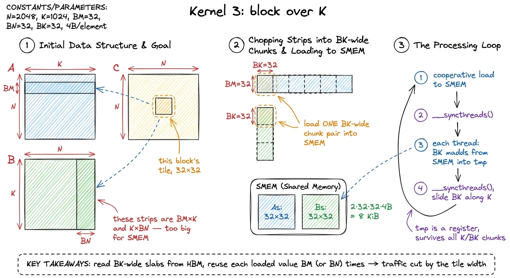
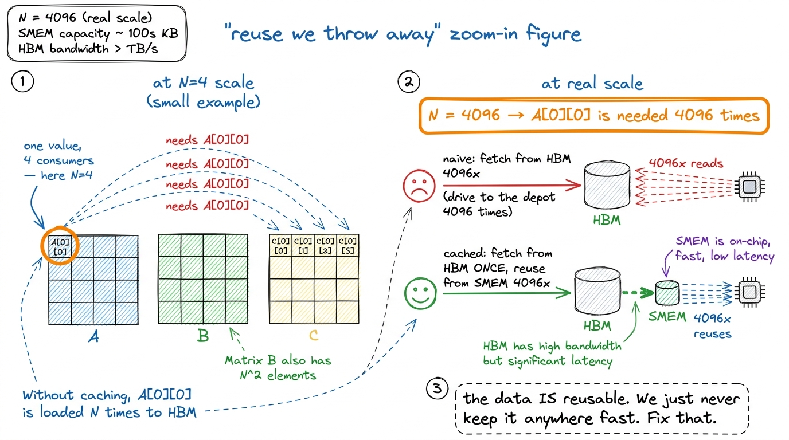
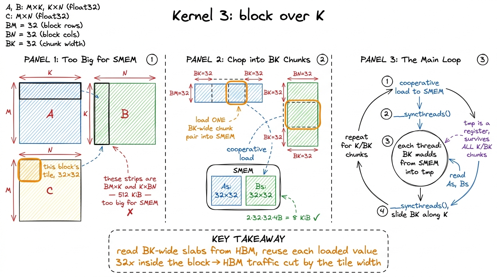
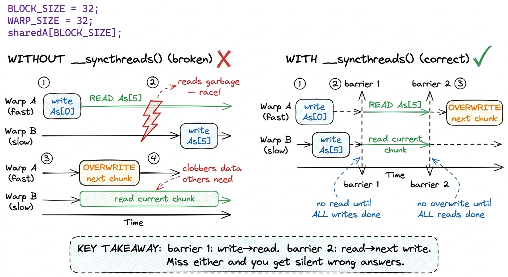
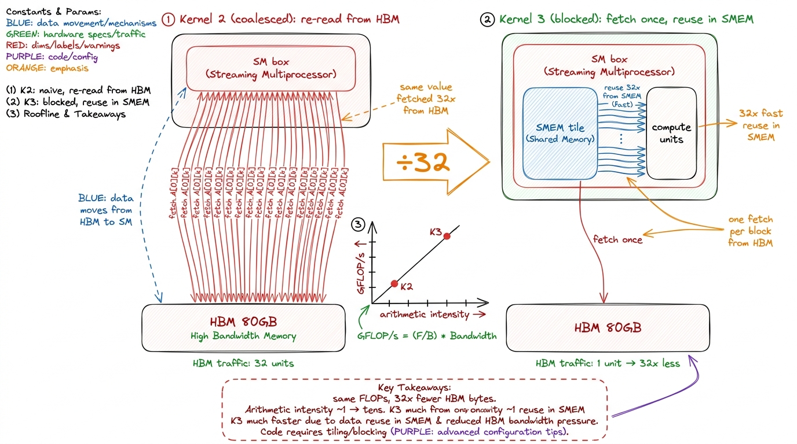
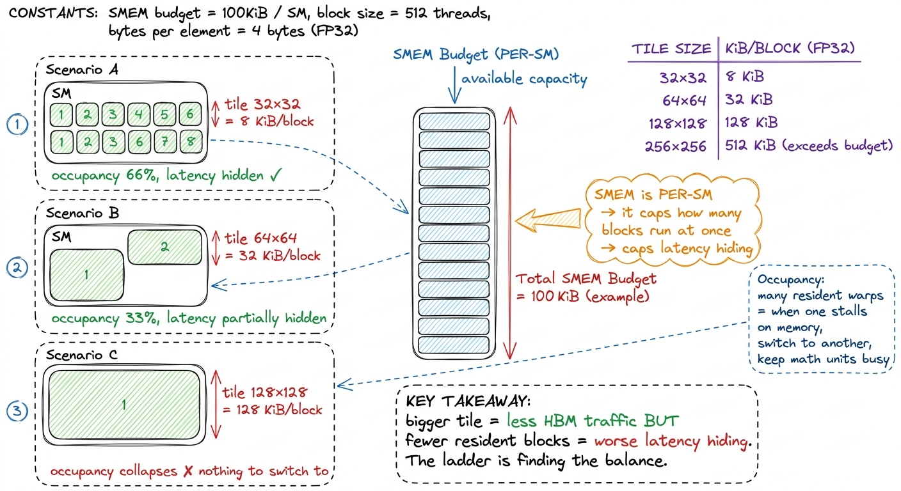
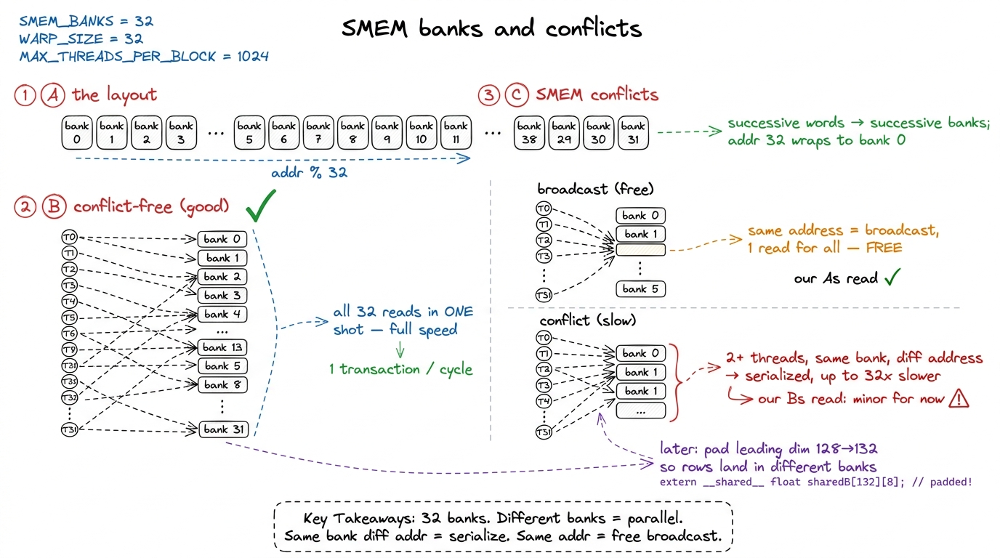
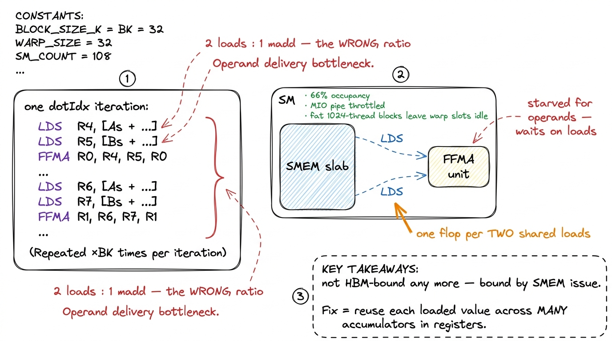

Kernel 3: Shared-memory tiling 12.8%
Two kernels in, we have a fast car stuck in a traffic jam. Kernel 1 wrote the most naive matrix multiply and hit a wall. Kernel 2 fixed the memory access pattern and quadrupled us to 8.5% of cuBLAS with a one-line change. But the profiler was unimpressed, for a reason we already saw coming: we are still fetching the same numbers from global memory over and over again. Coalescing made each trip to memory efficient; it did nothing to reduce how many trips we take. This kernel attacks that head-on. It is the first optimization on the ladder that changes the algorithm instead of the memory layout — and it is where the climb properly begins.1 Everything below follows the shared-memory cache-blocking kernel from Simon Boehm's "How to Optimize a CUDA Matmul Kernel", cross-checked against salykova's H100/Ampere GEMM worklog. The GFLOP/s and occupancy figures are Boehm's A6000 run; the ladder and the percentages of cuBLAS carry over, and the hardware specs quoted (SMEM ceiling, L2, HBM3) are H100's — we rebuild the kernel in our own voice with our own figures.
Before we write a line of code, let me make sure we are starting from the same place. If you have never thought about where a number physically lives on a GPU, this section is for you. If you have, it is a 90-second recap, and then we go deep.
What question are we answering?
Here is the whole article in one sentence: why is it so much better to read a number from a small, nearby memory than from the big, far-away one — and how do we rewrite matrix multiply to do that?
Matrix multiplication is the beating heart of deep learning. Every attention layer, every feed-forward block, every LoRA update bottoms out in C = A × B. When vLLM serves a Llama model or FlashAttention runs on an H100, the bulk of the wall-clock time is spent inside GEMM kernels. So a factor of two here is not academic — it is a factor of two on your inference bill. That is the stakes. Now let's earn the speedup.
First, where do numbers live on a GPU?
Let me build the one mental model this entire article hangs on. A GPU is not one big calculator. It is a warehouse full of small work-crews, and each crew has a spectrum of places to keep its numbers — from a scratchpad in its pocket to a giant depot across town. The single most important fact about these places is that the closer a number is, the faster you can grab it, and the less room there is to store it. That trade — speed versus space — never goes away. Every optimization in this whole series is really just a clever way of keeping the right numbers in the close places.
Let me name the levels, from far to near:
- HBM (High Bandwidth Memory) — the big depot. On an H100 this is 80 GB at 3.35 TB/s. Enormous, but far: a single read that misses every cache costs hundreds of clock cycles of waiting.
- L2 cache — a shared shelf, about 50 MiB, sitting between the depot and the crews. All the crews share it.
- Shared memory (SMEM) and L1 — the scratchpad. Each Streaming Multiprocessor (SM) — one work-crew's building — has its own slab, and it runs at roughly L1 latency, one to two orders of magnitude faster than HBM.2 On H100 the L1 and SMEM live in the same 256 KiB physical array per SM, split at launch; up to 228 KiB of it can be carved out as SMEM. Those 228 KiB are not an exact hardware constant — a slice is reserved for the driver — but it is the figure you configure against. On Boehm's A6000 the usable ceiling is smaller, ~100 KiB, which is why his occupancy math below uses 102,400 bytes.
- Registers — a number literally in a thread's hand. Fastest of all, but each thread only gets a tiny handful.

figure rendering · The memory hierarchy as a warehouse. Speed and capacity trade off at eHold onto the warehouse picture. Everything that follows is an application of it.
The diagnosis: we are throwing away reuse
Recall the core problem from kernel 1: the arithmetic intensity of naive GEMM is about 1 flop per byte loaded — hundreds of times below the point where an H100 becomes compute-bound. Arithmetic intensity is just "how much math do I do per byte I fetch?" If it is low, you spend all your time waiting on memory and the expensive math units sit idle. Ours is catastrophically low. Why?
Because of reuse we throw away. Let me make this concrete with a tiny example you can hold in your head. Take a 4 × 4 times 4 × 4 matrix multiply. Look at one single element, A[0][0]. Which output elements need it?
The first row of C is A's first row dotted against each column of B. So A[0][0] participates in computing C[0][0], C[0][1], C[0][2], and C[0][3] — every element in row 0 of the output. That is N = 4 different outputs, all needing the same number.
In a big matrix with N = 4096, that same A[0][0] is needed 4096 times. The data is genuinely reusable. And yet the naive and coalesced kernels re-fetch it from HBM every single time, because each output element is computed by a different thread and no thread ever hands its neighbor the value it just loaded. We drive to the depot, pick up one screw, drive back, and do that 4096 times for a screw we could have kept in our pocket.

figure rendering · The heart of the problem, on a 4×4 toy. Each input element is needed bThis is the whole opportunity in one picture. The plan writes itself: load a value into fast memory once, reuse it many times before evicting it. That classic move has a name — cache-blocking, or tiling.
The plan: cache a tile, compute against it, slide
Here is the strategy in plain words. Read from HBM a little; compute from SMEM a lot.
Give each thread block an output tile of C of size BM × BN — say 32 × 32. That block is responsible for filling in exactly those 1024 output cells and nothing else. To produce that tile, block (blockIdx.y, blockIdx.x) needs the corresponding BM rows of A and BN columns of B.
But pause — there is an immediate problem, and spotting it is the key insight of the kernel. Those BM rows of A are not small. They are BM × K: full-length strips that run the entire width of the matrix. At K = 4096 that is 32 × 4096 floats = 512 KiB for A's strip alone. Our scratchpad is at most ~228 KiB. It does not fit. The full strips of A and B cannot live in SMEM at once.
That constraint — not a stylistic choice — is what forces the second idea: we must also block over K. Instead of loading the whole strip, we walk the K dimension in chunks of width BK. On each step we stage only a BM × BK slab of A and a BK × BN slab of B — small enough to fit — accumulate every product those two slabs contribute to our output tile, then slide BK further along K and do it again.
The partial sums live in a per-thread register (tmp) and survive across all the chunks. The SMEM tiles get overwritten each chunk. That is the loop.

figure rendering · Kernel 3. The K loop is chunked into BK-wide steps; each chunk pair isThe code, and the two barriers that make it correct
Now the kernel. It is a loop over K in BK-sized steps. Inside each step there are three phases: a cooperative load, a compute pass, and — crucially — a synchronization barrier on either side of the compute.
template <const int BLOCKSIZE>
__global__ void sgemm_smem(int M, int N, int K,
const float* A, const float* B, float* C) {
__shared__ float As[BLOCKSIZE * BLOCKSIZE];
__shared__ float Bs[BLOCKSIZE * BLOCKSIZE];
const uint cRow = blockIdx.y, cCol = blockIdx.x;
const uint threadRow = threadIdx.x / BLOCKSIZE;
const uint threadCol = threadIdx.x % BLOCKSIZE;
// advance pointers to this block's row-of-A and col-of-B
A += cRow * BLOCKSIZE * K;
B += cCol * BLOCKSIZE;
C += cRow * BLOCKSIZE * N + cCol * BLOCKSIZE;
float tmp = 0.0f;
for (int bkIdx = 0; bkIdx < K; bkIdx += BLOCKSIZE) {
// 1. every thread loads one element of each tile
As[threadRow * BLOCKSIZE + threadCol] = A[threadRow * K + threadCol];
Bs[threadRow * BLOCKSIZE + threadCol] = B[threadRow * N + threadCol];
__syncthreads(); // tile fully populated before anyone reads
A += BLOCKSIZE; // slide along K
B += BLOCKSIZE * N;
// 2. accumulate this chunk's contribution from SMEM
for (int dotIdx = 0; dotIdx < BLOCKSIZE; ++dotIdx)
tmp += As[threadRow * BLOCKSIZE + dotIdx] *
Bs[dotIdx * BLOCKSIZE + threadCol];
__syncthreads(); // don't overwrite tiles others still need
}
C[threadRow * N + threadCol] = tmp;
}Read it slowly. Each of the 1024 threads owns exactly one output cell of the 32 × 32 tile — (threadRow, threadCol) — and it accumulates that cell's value in tmp. Notice that the load is cooperative: on each chunk, thread (threadRow, threadCol) loads one element of As and one of Bs. All 1024 threads together populate the two 32 × 32 tiles in a single sweep. Then everyone computes against the shared copy.
Those two __syncthreads() are the whole game, and getting them wrong is the classic first bug that everyone hits. Let me explain each one, because if you understand these two barriers you understand cooperative SMEM programming.
The first barrier stands between the load and the compute. Think about what happens without it. Thread 0 finishes writing its element of As quickly, then charges ahead into the dotIdx loop and reads As[0], As[1], As[2]… — but thread 5, which was supposed to write As[5], has not gotten there yet. Thread 0 multiplies against uninitialized garbage. The barrier says: nobody reads the tile until every thread has finished writing its piece.3 __syncthreads() is a block-wide barrier — it synchronizes threads within one block, never across blocks, and every thread must reach it or the kernel deadlocks. It is also a compiler memory fence for shared memory, which is why the reads on the far side actually see the writes and the compiler doesn't reorder them.
The second barrier stands at the bottom of the loop. Now imagine a fast warp that finishes its dotIdx loop early and loops back to load the next chunk — it starts overwriting As while a slower warp is still reading the current chunk out of it. Corruption again, in the other direction. The barrier says: nobody overwrites the tile until everyone is done reading it. One barrier protects the write from the read; the other protects the read from the next write.

figure rendering · The two barriers, drawn as a race. Without them, fast threads read befWith BLOCKSIZE = 32 the block is 32 × 32 = 1024 threads, exactly the max threads per block, and the load pattern is trivially one element per thread. That neatness is not an accident — it is why 32 is the tidy choice for this first cut.
Why the traffic actually drops — let's count the bytes
Now the payoff, and I want to count it, not assert it. Napkin math out loud, the way we always do.
Take the coalesced kernel first. To compute the 32 × 32 output tile, over the whole K loop the threads collectively read all of A's BM rows and all of B's BN columns, straight from HBM — and here is the waste — each A element gets pulled once for every column it multiplies against, each B element once for every row. The reuse is happening in the algorithm but not in the hardware; each reuse is a fresh HBM trip.
Now the blocked kernel. We load each BK-chunk of the tiles into SMEM exactly once. Then, during the inner dotIdx loop, we read it back — but from SMEM, not HBM — BLOCKSIZE times. Trace one element to be sure. An element of the As tile, once it is sitting in shared memory, is read by all BN = 32 threads that share its row of the output tile. An element of the Bs tile is read by all BM = 32 threads that share its column. So every value we fetched from HBM is now consumed 32 times before we evict it.
That is the number. Global-memory traffic falls by a factor of the tile width — roughly 32× for this configuration — because that is exactly how many times each loaded value is reused before eviction. We did not change the flop count at all; we did the identical arithmetic. We simply stopped driving to the depot for a screw we already had in our pocket.
And in roofline terms: arithmetic intensity climbs from ~1 flop/byte toward the tens. We are marching up and to the right on the roofline plot, away from the memory-bound cliff.

figure rendering · Before and after. The coalesced kernel re-reads each value from HBM onWhy we can't just make the tile enormous
If a 32-wide tile cuts traffic 32×, the obvious next thought is: why not a 128-wide tile for a 128× cut? Or 1024-wide and be done forever? This is exactly the right question to ask, and the answer teaches the central tension of GPU programming. Let's think it through.
The first wall is capacity. Two tiles of FP32 cost 2 × BLOCKSIZE² × 4 bytes of SMEM. At 32 that is a comfortable 8 KiB per block. Do the arithmetic for bigger tiles: 64 × 64 needs 32 KiB; 128 × 128 needs a full 128 KiB — pressing against the ~228 KiB ceiling with a single block. So capacity alone caps you somewhere.
But the deeper wall is occupancy, and this is the subtle part. SMEM is a per-SM resource. The SM hands out its slab to the blocks running on it, and the more each block hoards, the fewer blocks can run at the same time. Why do we care about running many blocks at once? Because that concurrency is how a GPU hides latency. When one warp stalls waiting on a memory read, the SM instantly switches to another ready warp and keeps the math units busy. Fewer resident blocks means fewer warps to switch to, which means the SM stalls with nothing to do. Occupancy — the fraction of the SM's warp slots that are filled — is the currency of latency-hiding.
Let me do the actual occupancy accounting for our kernel, from Boehm's A6000 run, because the numbers are illuminating. Each block uses 8192 bytes of SMEM plus ~1024 bytes of runtime overhead ≈ 9216 bytes, wants 1024 threads, and the compiler assigns 37 registers per thread. The SM checks three ceilings and takes the minimum:
- By SMEM:
102,400 ÷ 9,216 ≈ 11blocks could fit. Plenty of room. - By threads: the SM allows 1,536 threads, and our block wants 1,024 → only 1 block fits.
- By registers: 65,536 registers ÷ (1024 × 37) → again only 1 block.
The minimum is 1 block per SM. One block of 1024 threads is 32 warps, out of the SM's maximum of 48 → 66% occupancy.4 66% is not a disaster — Boehm calls it acceptable — but notice what the limiter is. It is not SMEM here; it is the fat 1024-thread block bumping the thread ceiling. That is a hint the next kernels will use: shrink the block so more of them fit and occupancy recovers, then make each thread do more work. Push the tile to 128 × 128 and SMEM becomes the limiter, occupancy collapses toward a single block that can barely hide any latency, and you go backwards. That is why the tile cannot just be enormous.

figure rendering · Shared memory is a per-SM budget. A bigger tile cuts HBM traffic but sA quieter cost: bank conflicts
There is a second, subtler cost hiding inside the SMEM array, and it is worth meeting now even though we won't fix it yet. SMEM is not one flat pool. It is physically split into 32 banks — 32 independent little memories that can be read in parallel, one per thread in a warp. Successive 32-bit words map to successive banks: address 0 → bank 0, address 1 → bank 1, …, address 32 → bank 0 again.
The rule is: if the 32 threads of a warp each touch a different bank, all 32 reads happen in one shot — full speed. But if two threads in the warp hit the same bank at different addresses, the hardware has no choice but to serialize them: two passes instead of one. That is a bank conflict, and a 32-way conflict makes a shared read 32× slower.
There is one lovely exception that saves us here: if all threads read the exact same address, that is a broadcast, and it is free — one read, fanned out to everybody. In our inner loop, the As[threadRow * BLOCKSIZE + dotIdx] access has all threads in a warp reading the same As element (a broadcast — free), while the Bs column access can conflict depending on stride.5 Later kernels pad the leading dimension of the transposed A tile — e.g. 128 → 132 floats, exactly what salykova's kernel does — so consecutive rows land in different banks and 32-way conflicts turn into conflict-free reads. At this stage the conflicts are minor and not yet the bottleneck; we note them and fix them when the profiler says they matter. We note it and move on; it is not yet the wall.

figure rendering · Shared memory is 32 parallel banks. Distinct banks read together; a saThe measurement
Compile, run, profile. The number moves the right way — but not dramatically: about 2980 GFLOP/s, which is 12.8% of cuBLAS, up from the coalesced kernel's ~1990 GFLOP/s and 8.5%. A ~50% speedup from a genuinely more efficient algorithm.6 The exact figure drifts a few tenths of a percent run to run and with matrix size — you will also see ~2200 GFLOP/s quoted for a different problem shape. The jump from ~8.5% to ~12.8% is the stable, reproducible result. Anything in that band means the SMEM tiling is doing its job.
Now stop and be honest about that result, because it is genuinely surprising and the surprise is the whole lesson. We cut HBM traffic by 32×. If HBM traffic were still the only thing holding us back, performance should have leapt by something close to 32×. It leapt by 1.5×. Where did the other 30× go?
The answer: cutting HBM traffic 32× proved that HBM traffic was no longer our bottleneck. We fixed the thing that used to hurt, and immediately a different thing became the ceiling. This is the rhythm of the whole series — every optimization reveals the next bottleneck — and here it happened cleanly.
Point Nsight Compute at the kernel and the story is explicit. Occupancy sits around 66%, and — as we computed above — the limiter is blocks per SM: only one fat 1024-thread block fits, leaving a third of the SM's warp slots empty and its latency-hiding weaker than it could be. More tellingly, the profiler flags stalls on MIO Throttle — the pipeline that services shared-memory instructions is saturated. The instruction mix is still dominated by memory operations, but now they are LDS (load-from-shared) instructions, not global loads. We traded a global-memory bottleneck for a shared-memory-and-issue bottleneck.
Look at the inner loop — the ratio is wrong
Why is the SMEM pipeline saturated? Look at the hot loop one more time and count instructions, not bytes:
for (int dotIdx = 0; dotIdx < BLOCKSIZE; ++dotIdx)
tmp += As[threadRow * BLOCKSIZE + dotIdx] *
Bs[dotIdx * BLOCKSIZE + threadCol];Every iteration is: one LDS to fetch an As value, one LDS to fetch a Bs value, and one FFMA (fused multiply-add) to combine them into tmp. That is two shared-memory loads for every one multiply-add — a 2:1 ratio, the wrong way round. We are spending more instruction slots fetching operands out of SMEM than we are doing arithmetic on them. The FP32 math pipe — never mind the tensor cores — is starved. Not for bytes from HBM any more. Starved for a better ratio of compute-to-load inside the block.

figure rendering · The Nsight profile made visual: the hot loop issues two shared loads fThe bridge to kernel 4
The profiler has handed us the next hypothesis, exactly as it did in kernel 1. We are no longer HBM-bound; we are bound by doing too few flops per SMEM load. And notice the fix is not more caching — caching HBM was yesterday's problem. The fix is arithmetic reuse in registers, one level closer in the warehouse.
Here is the idea in one line, and it is beautiful. Instead of each thread computing one output element — one FFMA per two LDS — we make each thread responsible for a small column of outputs. It loads one value from SMEM into a register once, then reuses that register across several accumulators before it ever touches SMEM again. If a value loaded once feeds, say, 8 multiply-adds, the ratio flips from 2:1 loads-to-math toward 1:8. The starved FFMA unit finally gets fed.
That is 1D block-tiling, kernel 4 on the ladder, and it is where the numbers finally start to leap: a single register-reuse trick takes us from 12.8% to 36.5% of cuBLAS. The pattern holds all the way up — state the hypothesis the profiler implied, write the smallest kernel that tests it, measure, let the new bottleneck pick the next move. We climbed one rung by moving reuse from HBM to SMEM. Next we move it from SMEM to registers.
Onward to kernel 4: 1D block-tiling.